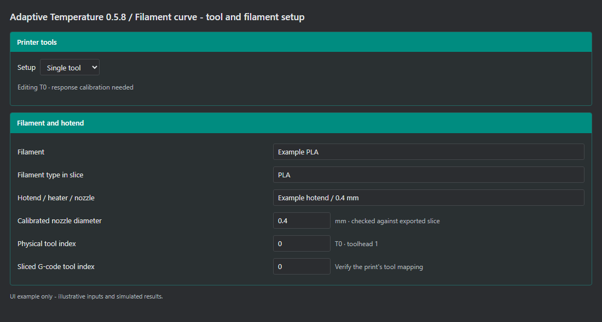
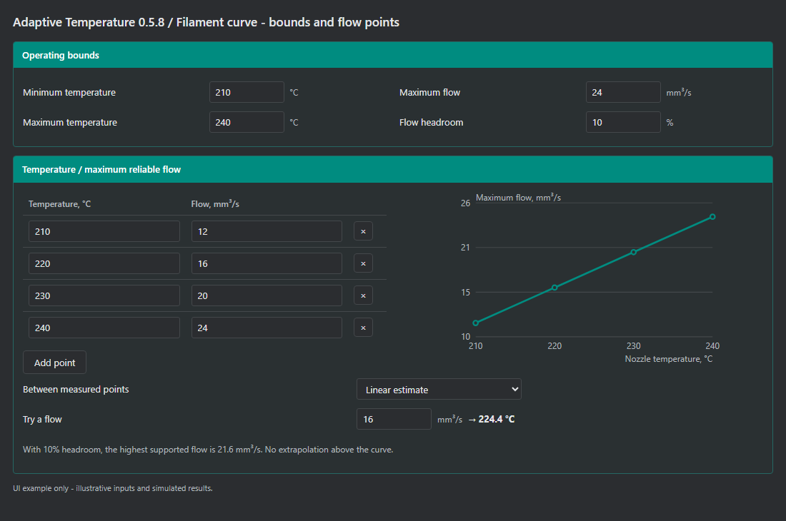
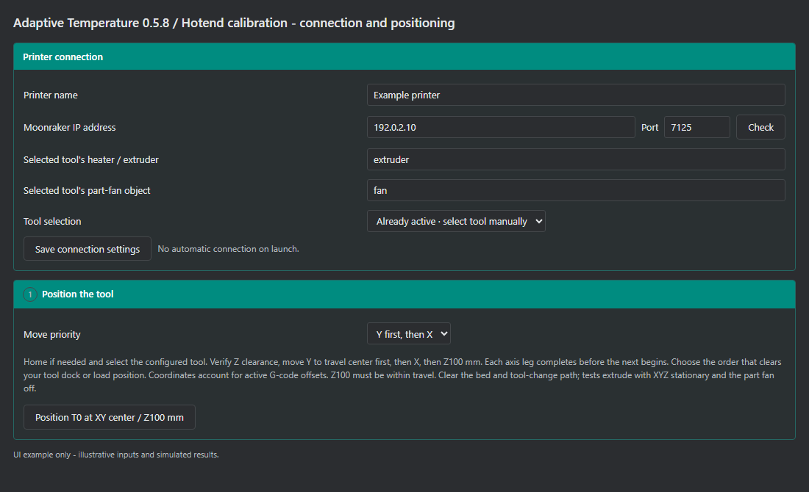
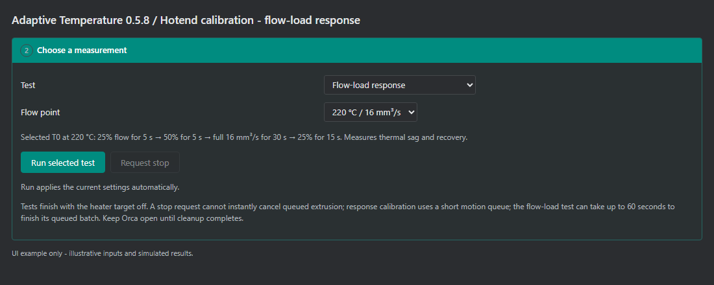
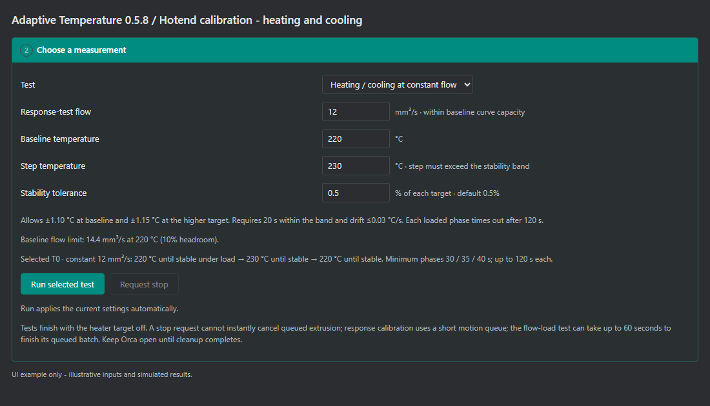
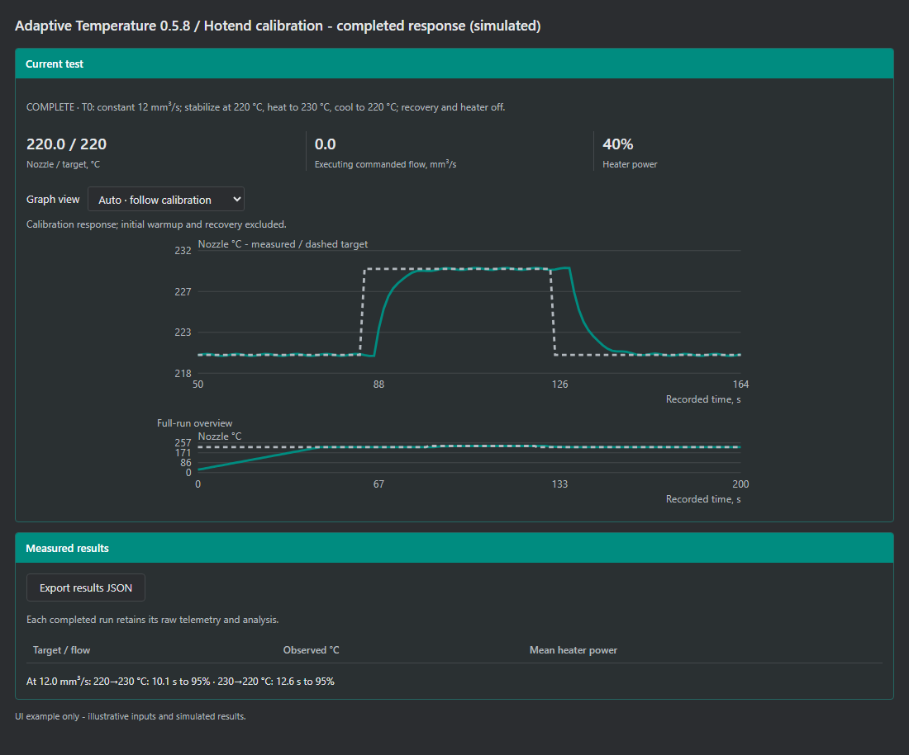
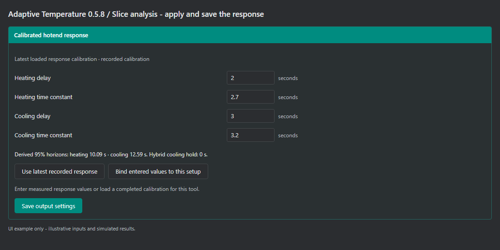
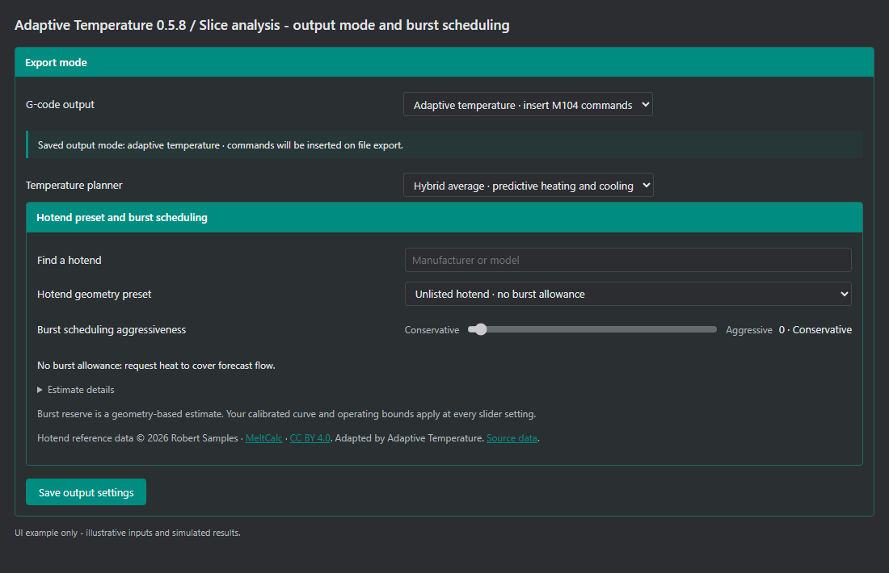
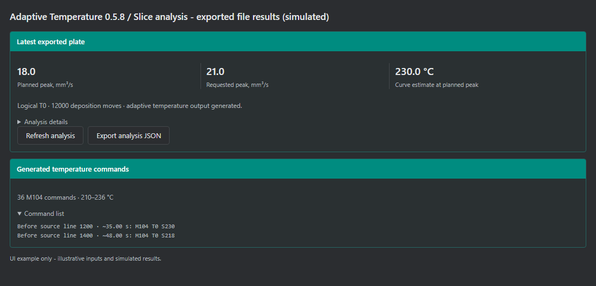
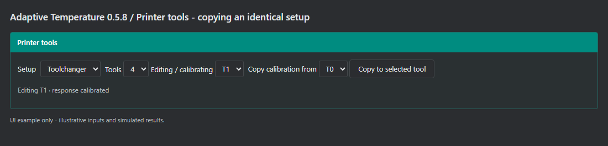

One filament profile. Temperature that follows the print’s flow demand.
The plugin combines your temperature/flow curve with your hotend’s measured heating and cooling response. It predicts upcoming demand using print speed and acceleration, then adds nozzle temperature commands to exported G-code.
24571737; menus may vary between nightlies.adaptive_temperature-0.5.8-py3-none-any.whl through Orca’s plugin manager.Pictures show real controls from the released plugin, reframed for readability. Values and results are illustrative, with simulated telemetry. They are not calibration recommendations. Click a picture in the HTML guide to view it at full size. Live calibration currently requires Windows and Moonraker/Klipper; the current live runner and editor support 1.75 mm filament.
Open Filament curve. Select Single tool or Toolchanger under Printer tools. For a toolchanger, set the tool count and choose the tool you are editing or calibrating.

| Input | What to enter |
|---|---|
| Filament | A recognizable name for this material, such as a brand, product and color. The default is PLA. |
| Filament type in slice | The material type in Orca’s exported slice, such as PLA. This is checked during export. |
| Hotend / heater / nozzle | A description that distinguishes the installed setup. Update it when the hardware changes. |
| Calibrated nozzle diameter | The installed nozzle diameter in mm. It must match the exported slice. |
| Physical / sliced tool indices | The printer tool and its G-code tool number. These must match in this release. |
Use Save plugin settings at the top or bottom of this page after making changes. A new profile has restrictive placeholder values and an unconfigured response; replace them with your own data.
Enter 3–4 tested temperature/flow pairs or use known presets for the same setup. See tips and examples. The flow-load test checks thermal behavior; it does not discover flow limits.

| Input | Meaning |
|---|---|
| Minimum / maximum temperature | The allowed scheduling range. Set the minimum for reliable low-flow print quality and the maximum for your material and hardware. |
| Maximum flow | An absolute configured cap. Keep the flow curve within it. |
| Flow headroom | Reduces the usable curve capacity. With 10% headroom, a measured 24 mm³/s supports up to 21.6 mm³/s. |
| Flow points | Use 2–12 increasing temperatures; flow capacity must not decrease. The first point must be at the minimum temperature. No extrapolation above the curve. |
| Between measured points | Linear estimate interpolates; Use the higher temperature point chooses the next hotter measured point. |
| Try a flow | Previews the curve’s temperature estimate, including headroom. It does not operate the printer. |
Advanced · motion model: enter the printer’s starting maximum velocity, acceleration, square corner velocity and minimum cruise ratio. G-code speed and acceleration commands update these limits. The planner models acceleration and deceleration; non-Klipper jerk behavior is not fully simulated.
Start with 3–4 temperature targets and a reliable flow value for each.
Spread the points across the temperature range you intend to print: one at the minimum, one or two intermediate targets, and one at the maximum. This gives the planner a useful scale for choosing temperatures as flow changes.
If you have presets that print reliably at different temperatures and maximum volumetric speeds, use their temperature + flow pairs as starting data points. Use presets for the same filament, hotend and nozzle combination.
These supplied examples show how different hotends can use different curves. Treat them as setup-specific references and verify suitable values for your own filament, nozzle and hardware.
| Temperature | Reliable flow |
|---|---|
| 210°C | 15 mm³/s |
| 220°C | 18 mm³/s |
| 230°C | 20 mm³/s |
| 240°C | 24 mm³/s |
| Temperature | Reliable flow |
|---|---|
| 210°C | 30 mm³/s |
| 220°C | 38 mm³/s |
| 230°C | 50 mm³/s |
| 245°C | 75 mm³/s |
With 10% headroom, these example curves allow up to 21.6 mm³/s and 67.5 mm³/s, respectively. Enter the reliable flow values in the curve; the plugin applies headroom separately.
The flow-load test checks thermal tracking at the points you supply. Heating/cooling calibration supplies the predictive timing. Confirm printed quality across the intended range when consolidating several presets into one filament profile.

| Input | What to enter or do |
|---|---|
| Printer name / IP / Port | A printer label; IP address only, without http:// or a port; Moonraker port, usually 7125. Click Check to read connection status. |
| Heater / extruder; part-fan object | The exact Klipper object names for the selected tool. extruder, extruder1 and fan are examples; verify your printer’s configuration. |
| Tool selection | Already active for manual selection; Printer Tn command / macro for compatible toolchangers; the dedicated Snapmaker U1 · Tn A0 option for U1. |
| Move priority | Choose Y first, then X or X first, then Y to clear your dock or load position. Default Y-first is not a universal clearance guarantee. |
With the bed and tool-change path clear, use Position … at XY center / Z100 mm. It homes if needed, verifies Z clearance and tool selection, completes each axis leg separately, then reaches Z100. Reported travel must include Z100.
Position and Run use the settings currently shown; a separate save is unnecessary to enable them. Live tests extrude while XYZ is stationary, with the part fan off. Monitor collection space and clear accumulated extrusion between runs. Printing or paused jobs block calibration commands.
Select Flow-load response and choose a temperature/flow point from your saved curve. Confirm that the selected tool has the intended filament loaded and can sustain that point, then click Run selected test.

| Stage | Commanded load |
|---|---|
| First 5 seconds | 25% of the selected point’s flow. |
| Next 5 seconds | 50% flow. |
| Next 30 seconds | The full selected flow. |
| Final 15 seconds | 25% flow, followed by recovery and heater target off. |
The live graph shows measured nozzle temperature and target; the metrics show commanded flow and heater power. Completed results report the observed temperature range and mean heater power during the full-flow segment.
Request stop is cooperative. A flow-load batch can take up to 60 seconds to finish queued extrusion. Keep Orca open until cleanup completes; tests finish with the heater target off.
Choose Heating / cooling at constant flow. Use a flow that is supported at the baseline temperature after headroom is applied.

| Input | How to choose it |
|---|---|
| Response-test flow | A sustainable loaded flow within the displayed baseline limit. Keep this load constant during the temperature steps. |
| Baseline / step temperature | Two temperatures within your bounds. The step must be at least 2°C and at least four times the largest selected tolerance band. |
| Stability tolerance | 0.05–1% of each target in degrees Celsius; default 0.5%. At 220°C that is ±1.10°C; at 230°C, ±1.15°C. |
Click Run selected test. The runner warms up, establishes stable temperature under flow, steps up, then steps back down. Each loaded phase needs 20 seconds inside the tolerance band and drift no faster than 0.03°C/s.
Minimum loaded phases are 30 / 35 / 40 seconds; each can extend to 120 seconds. A timeout fails the run and turns the heater target off. Choose a tolerance that accommodates normal PID variation while retaining a meaningful temperature step. The response test uses a short motion queue for continuous flow.

| Display | How to read it |
|---|---|
| Solid / dashed lines | Measured nozzle sensor temperature / commanded target. |
| Graph view | Auto follows the active phase with preceding context; on completion it shows the loaded response. Choose Entire calibration response or Full run including warmup for a fixed view. |
| Time to 95% | A summary of each fitted temperature transition. Both heating and cooling need usable fits. |
Click Export results JSON to retain raw telemetry and analysis. Next, apply the fitted response on Slice analysis; completing the test alone does not apply it to G-code scheduling.

| Value | Meaning |
|---|---|
| Delay | The fitted time before the temperature response begins. |
| Time constant | How quickly the response approaches its target after the delay. |
| 95% horizon | Approximately delay + 3 × time constant. Heating and cooling have separate horizons. |
Do not enter the “seconds to 95%” result as the time constant. The load button transfers the separate fitted terms correctly. Bind entered values to this setup is for users who already have appropriate measured delay and time-constant values.
Use the recorded response during the calibration session, then save it and export a settings backup. Saved response settings persist; the latest-recording list is not an automatic cross-version archive of old sessions. The model describes the closed-loop nozzle sensor response under the tested conditions, not direct polymer melt temperature.

| Setting | Recommended starting approach |
|---|---|
| G-code output | Use Analyze only while setting up. Select Adaptive temperature · insert M104 commands when ready, then click Save output settings. |
| Temperature planner | Use Hybrid average · predictive heating and cooling for the calibrated response workflow. |
| Hotend geometry preset | Find the matching geometry. Use the unlisted/no-allowance option if it is unknown. A preset does not populate or replace your flow curve or response calibration. |
| Burst aggressiveness | Start at 0 as a conservative baseline. Increase gradually after evaluating print quality. Higher values allow more estimated reserve for brief demand peaks and can permit earlier temperature reductions. |
Keep temperature, flow limits and headroom appropriate for each tool. A small melt zone and a long melt zone may need different slider settings. Zero removes modeled reserve spending; it leaves adaptive temperature scheduling active.
Burst reserve is estimated from hotend geometry, not measured usable melt inventory. The slider is not a temperature percentage. Reference data: Robert Samples, MeltCalc, CC BY 4.0; geometry adapted by Adaptive Temperature. Limits still apply at every slider setting.

| Result | What it means |
|---|---|
| Requested / planned peak | Requested flow from feed commands / forecast flow after the motion model accounts for acceleration and related limits. |
| Curve estimate at peak | The curve’s temperature for that planned peak; it is not a claim that every move receives that setpoint. |
| M104 commands | Nonblocking temperature targets inserted after the first layer. Existing startup, heater, tool-change and shutdown commands remain present. |
Preview colors show commanded setpoints. Predictive cooling can lower a setpoint while the modeled nozzle is still hot. Forecast average flow is not instantaneous melt flow. Unknown macros, waits and tool changes limit prediction across those boundaries; validate output under your printer’s actual conditions.
In Toolchanger mode, configure up to four tools. The Editing / calibrating selection chooses which profile you are changing; it does not restrict export to only that tool.

During a multicolor or multi-tool export, the plugin schedules every supported used tool after the first layer using its own calibration. If a used tool has missing or mismatched data, export is refused rather than quietly using another tool’s curve.
Copy only between matching hotend, nozzle and filament combinations. The destination retains its own tool indices, heater, fan and selection mapping. Copied data is marked as inherited; it was not independently measured on that tool.
At the bottom of Filament curve, click Export settings. Also keep Export results JSON from calibration. Before upgrading, export settings and disable the older pipeline capability so two versions do not process the same file.
Install the new wheel, enable its Pages and pipeline capabilities, Import settings, review mappings and save. Import keeps calibration and resets output to Analyze only; explicitly select and save adaptive output when ready.
Settings backups contain the printer details you entered. Review them before public sharing. This guide contains only generic examples.
| Symptom | Check or action |
|---|---|
| No temperature edits | Read Saved output mode. Select adaptive output and save it. Under Process → Others → Slicing Pipeline Plugin, use + Add plugin to add Adaptive Temperature — slice analysis if missing. Export a new file, then refresh analysis. |
| Old colors in Preview | Open the newly exported G-code in the G-code viewer and choose Temperature. The original slice preview is unchanged. |
| Run is disabled | Read the reason beside Run. Check IP/port, tool mappings, temperature bounds and baseline flow capacity including headroom. Run applies the shown settings; saving connection first is not required. |
| Check cannot connect | Use an IP-only value and a separate port. Confirm Moonraker is reachable from this PC. A working server connection with missing tool telemetry usually indicates a heater-object mapping problem. |
| Tests cannot run in preview | The standalone preview HTML is deliberately disconnected. Run live calibration inside the installed Orca plugin on Windows. |
| Stability timeout / missing fit | Review the graph and exported results. Check that the flow is sustainable, the targets are separated sufficiently, and tolerance accommodates normal PID variation. Both response directions need fits. |
| Nozzle / material / binding mismatch | Select the matching tool profile or calibrate the actual installed setup. Correct nozzle and material fields; do not relabel another setup’s calibration to bypass the check. |
| Flow exceeds the curve | Reduce requested flow in the print or establish new reliable curve points within the hardware/material limits. Headroom lowers usable capacity. The plugin stops export rather than silently clipping the requirement. |
| Temperatures fall too readily | Reduce burst aggressiveness toward 0 for that tool. Confirm the low-temperature curve points are reliable for the desired print quality and that the correct response was applied. |
| A test fails or needs stopping | Use Request stop and monitor the printer while queued commands finish. Keep Orca open for cleanup. Read the reported error and export results for diagnosis before repeating. |
Flow: mm³/s, not filament mm/s. Temperature: °C. Delay / time constant: seconds. Velocity / corner velocity: mm/s. Acceleration: mm/s². Stability: percent of the target in °C. Burst slider: 0–100 scheduling aggressiveness, not a percentage temperature change.
The plugin estimates commanded extrusion and nozzle sensor response; it does not directly measure delivered melt. Firmware planner differences, pressure advance, runtime overrides, macros and fan conditions can affect predictions. These instructions describe Adaptive Temperature 0.5.8; use the accompanying README for integration and license details.